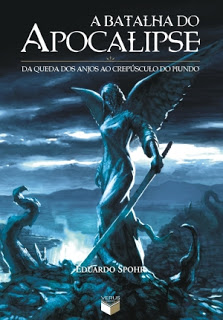

HOME
REVIEWS
CONTATOS
Resenhas:

A Batalha do Apocalise
- 01 -
Eduardo Spohr
Eu Sou O Número Quatro
- 01 -
Pittacus Lore
Ex-Heróis
- 01 -
Peter Clines
O Sorriso da Hiena
- 00 -
Gustavo Ávila
O Feiticeiro de terramar
– 01 –
Ursula K. Le Guin
Copyright © Mark in Japan, all rights reserved.